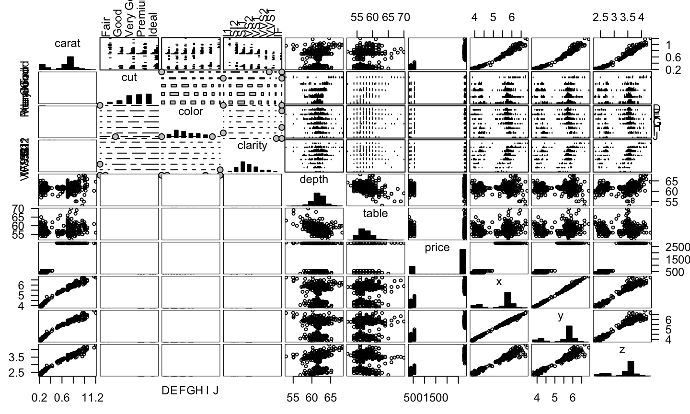

I'm an academic, so the techniques I am going to talk about come from academia.
Here's an extra-credit question (tweet at me!): who is the research in common with all three methods I'm talking about today?
June 27, 2015
I'm an academic, so the techniques I am going to talk about come from academia.
Here's an extra-credit question (tweet at me!): who is the research in common with all three methods I'm talking about today?
I don't believe in big data, but I do believe in multidimensional data.
Do you know the scatterplot matrix or pairs plot? Generally, it looks like this:
plot(mtcars)
That's a lot to look at, so lets take a subset:
library(dplyr) select(mtcars, mpg, cyl, disp) %>% plot()
The pairs plot is useful on its own, but the generalized pairs plot is even better.
Emerson, J. W., Green, W. A., Schloerke, B., Crowley, J., Cook, D., Hofmann, H., and Wickham, H. (2013). The generalized pairs plot. Journal of Computational and Graphical Statistics, 22(1):79–91.
library(gpairs) gpairs(mtcars)

The Grand Tour lets you explore multidimensional data more generically.